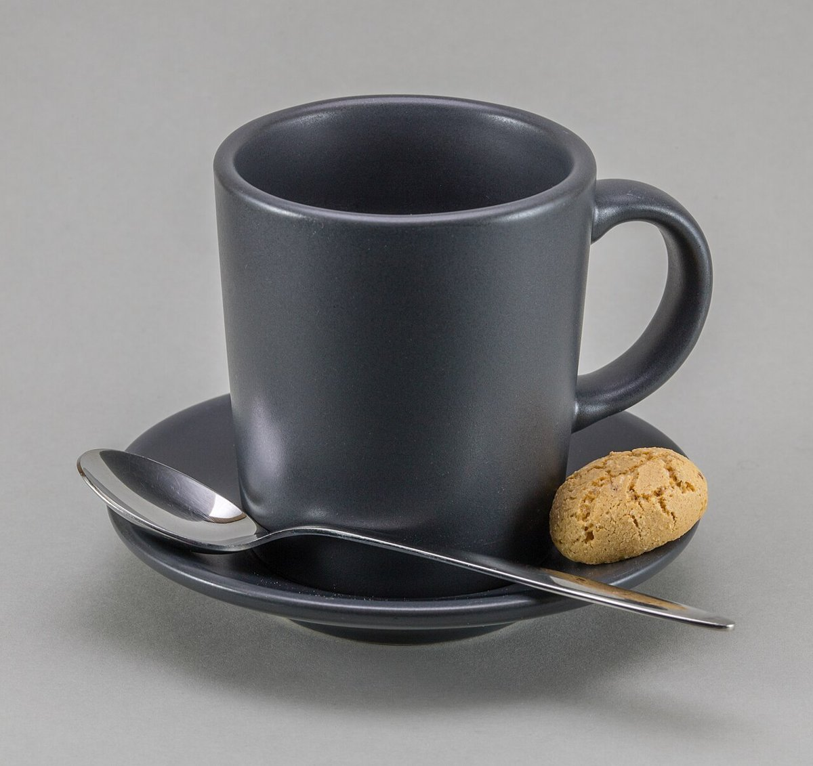

カフェ / 滋賀県高島市
星取表katsuno
coffee stand
滋賀県高島市のカフェ「katsuno coffee stand」のご案内ページです。営業時間やメニューなど、詳しいことは準備中。まずはInstagramをのぞいてみてください。

制作側の連想
「勝野」から「星取表」へ
制作側は、所在地の字名にある「勝」の字から、相撲の星取表(勝ちは白丸、負けは黒丸)を連想しました。お店の理念・由来とは無関係で、制作側の連想です。このサイトでは勝ち負けではなく、写真を一枚ずつ「一番」「二番」と並べる飾りとして、この丸印を使っています。
五番の取組(イメージ)
一番から五番まで。
写真は高島市のものではありません。雰囲気を伝えるための、国外・撮影地不明のフリー素材です。お店で提供しているものを示すものではありません。
- 一番
撮影地不明のイメージ - 二番

撮影地不明のイメージ - 三番

撮影地不明のイメージ - 四番

撮影地不明のイメージ - 五番

国外のイメージ(ドイツ)
ご案内
お店のこと(確認できたものだけ)
| 所在地 | 〒520-1121 滋賀県高島市勝野１３７７−１ |
|---|---|
| 電話 | 090-3450-3346 |
| 営業時間 | 準備中 |
| 定休日 | 準備中 |
| ご予約 | 準備中 |
| 駐車場 | 準備中 |
| SNS | Instagram @katsuno_coffee_stand |